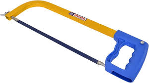

Hacksaw
Hacksaw is used for cutting rods, bars, pipes, flats, etc. It consists of a frame, which is made from mild steel. The blade is placed inside the frame and is tightened with the help of a flange nut. The blade is made up of high carbon steel or high-speed steel.